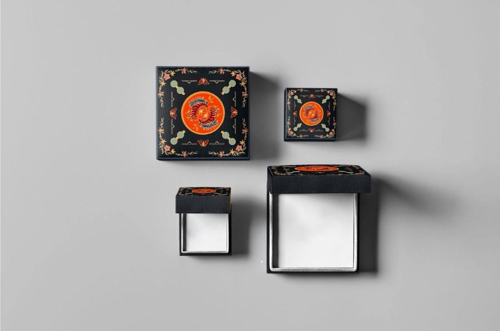
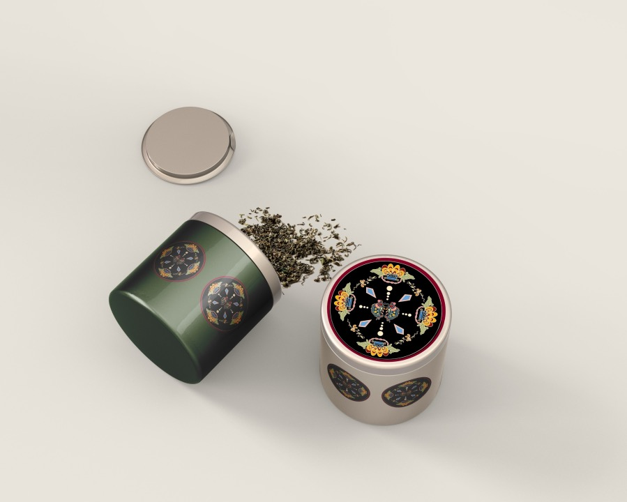
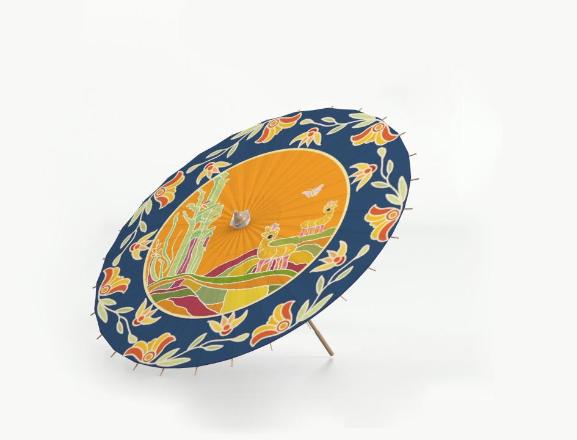
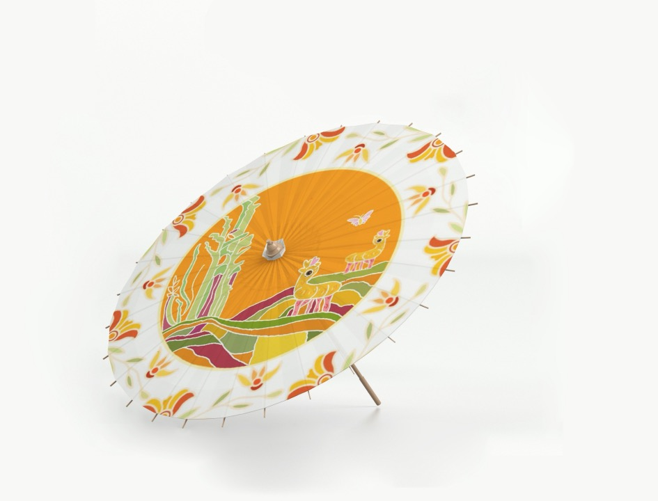

传统纹样设计
畲族具有悠久的历史，是中国东南地区人口最多的一个古老的少数民族。全用畲族人口约有70万，其中约52%的含族人口散居在福建，位于福建东北部宁德地区的霞浦县、罗源县和福安县是备族的主要居住地。民族传统文化底蕴深厚，有者鲜明的民族和地域特色。 作为一个福建本土人民，我也想从传统畲族纹样了解其文化，畲族人民对于自然尊敬崇拜，纹样中的许多花草纹，动物纹皆展示了他们对美好生活的向往，团结友爱的祝福。本次进行再设计，我主要使用了传统鱼纹，花草纹以及几何元素，打造简洁可爱同时具有传统特色的纹样。目的在于展现畲族独有的文化魅力，使畲族展现在大众的视野中，使更多的人了解这个单一的聚集的少数民族，了解畲族文化引起大众兴趣，使受众人群增多的同时畲族传统文化得到流传。
该纹样是“鹿食竹子”为主中心图，组合花草纹元素为辅助进行的再设计纹样。
鱼纹在畲族用来象征富裕，寓意着金玉满堂富贵有余等涵义；花草纹纹样造型常用植物花卉作为主要元素，在日常生活中通过模仿自然寻找美的规律创造了一系列圆满、柔和的纹样，这种富足、完满、灵动、向上的视觉形象呈现出畲族人民对吉祥如意的向往与祝愿。
颜色上使用的橙黄色与深蓝色进行对比，打造一个简洁明了，活泼有趣的画面。
该纹样是以鱼纹为主中心图，组合花草纹与几何元素为辅助进行的再设计纹样。
鱼纹在畲族用来象征富裕，寓意着金玉满堂富贵有余等涵义；花草纹寓意着美好，四季常青，人美对美好生活的向往。
该纹样是以鱼纹为主中心图，组合花草纹与几何元素为辅助进行的再设计纹样。
鱼纹在畲族用来象征富裕，寓意着金玉满堂富贵有余等涵义；花草纹寓意着美好，四季常青，人美对美好生活的向往。
颜色上使用的颜色相对明亮，与黑色底色进行对比，打造一个相对清新明亮的画面校果。
衍生产品



